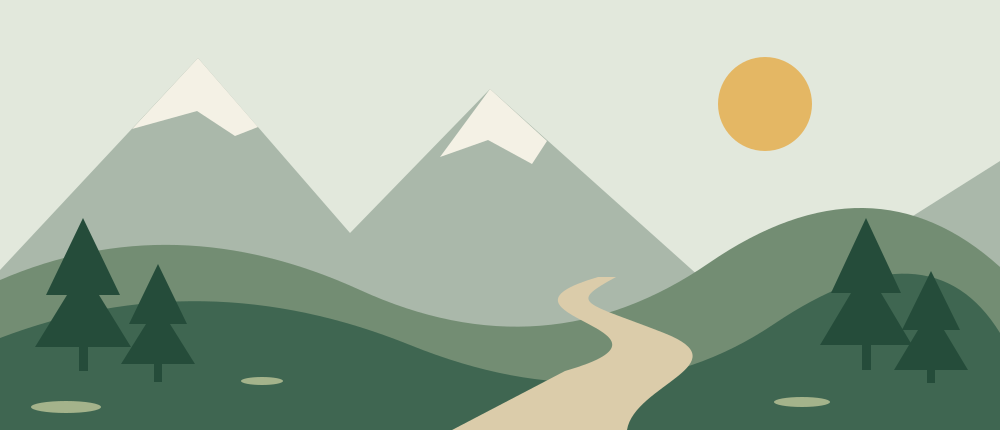

NATUR · FRISK LUFT · LAVE SKULDRE
Små turer.
Store opplevelser.
Du trenger ikke reise langt for å finne noe fint. En sti, litt frisk luft og god tid kan være nok.

Et lite avbrekk begynner ofte rett utenfor døren.
01 / FINN DITT TEMPO
Det enkle er ofte det beste
En tur i skogen er en fin anledning til å ta en pause fra skjermen. Lytt til fuglene, se på trærne og legg merke til de små tingene langs stien.
Målet trenger ikke være en fjelltopp. Noen ganger er det nok å finne en fin stein å sitte på.
02 / KLAR FOR EN LITEN TUR
Ta med det du trenger
Til en kort tur i nærområdet kan dette være fint å ha med:
- En flaske vann og litt å spise
- Gode sko og klær som passer været
- En ekstra genser til pausen
Velg en tur som passer deg, og ta med søppelet hjem.